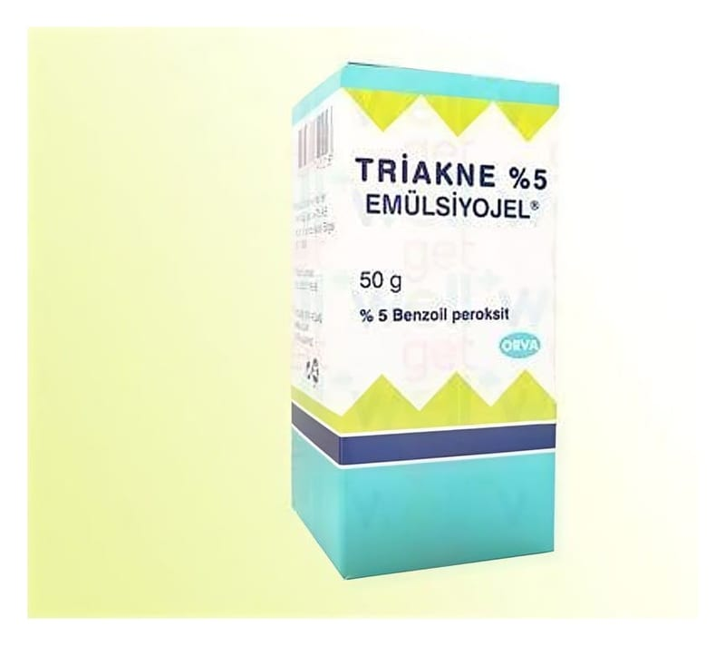

Triakne %10 Emülsiyon Jel, 50 g

Ne için kullanılır
KT · Bölüm 1 TRİAKNE, deri üzerine sürülerek kullanılan bir üründür. Topikal kullanılan antiakne preparatları olarak adlandırılan bir ilaç grubuna dahildir. TRİAKNE;etkin madde olarak, 1 gramında 100 mg benzoil peroksit ihtiva eder. Benzoil peroksit, deri üzerinde akne (sivilce) oluşumuna neden olan bir bakteri türüne karşı etkili bir maddedir. TRİAKNE, ağzı polietilen kilitli kapakla kapatılmış, 50 g ürün içeren polipropilen şişede kullanıma sunulmaktadır. TRİAKNE, aknenin (sivilce) bölgesel tedavisinde kullanılır. Ağır ya da nodülokistik aknede (deride derin izler bırakan, büyük, hassas nodüller ve kistlerden oluşan akne tipi) sistemik tedaviye yardımcı olarak da kullanılabilir.